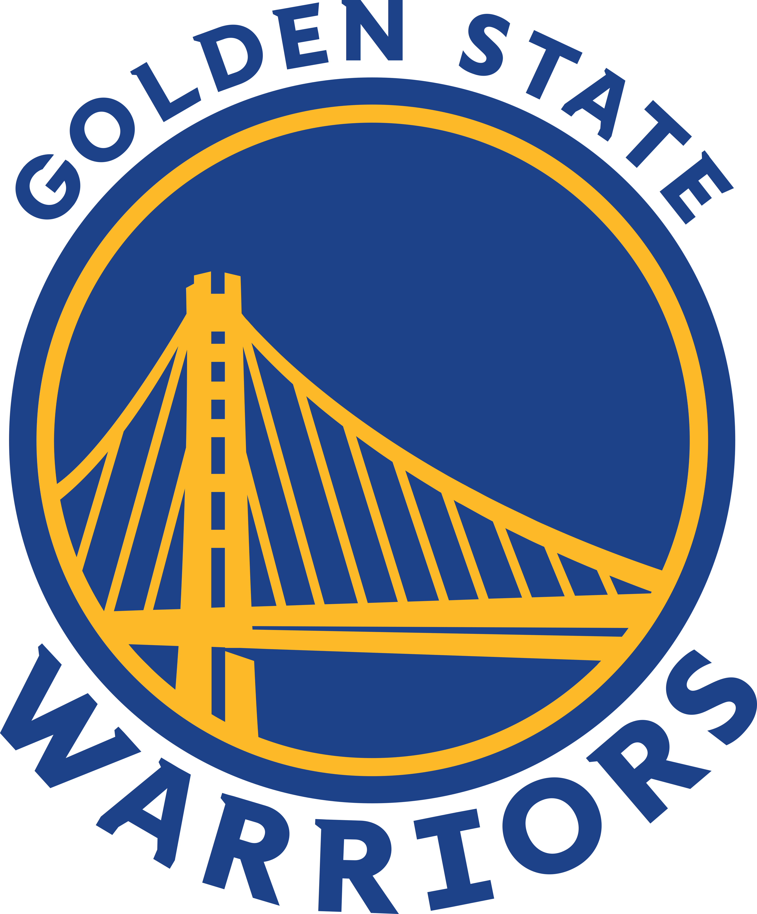

Golden State Warriors
Los Golden State Warriors son un equipo de baloncesto profesional con sede en Oakland, California. El equipo es conocido por su estilo de juego rápido y tiros de larga distancia. El nombre "Warriors" proviene de la Fiebre del Oro de 1849 y las doradas colinas de California.
Jugadores Estelares:
- Stephen Curry: Conocido por su increíble manejo del balón y tiros de tres puntos.
- Klay Thompson: Experto en tiros de larga distancia y defensa sólida.
- Andrew Wiggins: Aporta versatilidad en ambos extremos de la cancha.